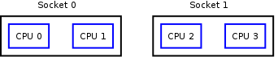
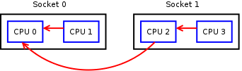
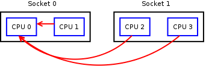

Small-task packing
A "small task" in this context is one that uses a relatively small amount of CPU time; in particular, small tasks are runnable less than 25% of the time. Such tasks, if they are spread out across a multi-CPU system, can cause processors to stay awake (and powered up) without actually using those processors to any great extent. Rather than keeping all those CPUs running, it clearly makes sense to coalesce those small tasks onto a smaller number of processors, allowing the remaining processors to be powered down.
The first step toward this goal is, naturally, to be able to identify those small tasks. That can be a challenge: the scheduler in current kernels does not collect the information needed to make that determination. The good news is that this problem has already been solved by Paul Turner's per-entity load tracking patch set, which allows for proper tracking of the load added to the system by every "entity" (being either a process or a control group full of processes) in the system. This patch set has been out-of-tree for some time, but the clear plan is to merge it sometime in the near future.
The kernel's scheduling domains mechanism represents the topology of the underlying system; among other things, it is intended to help the scheduler decide when it makes sense to move a process from one CPU to another. Vincent's patch set starts by adding a new flag bit to indicate when two CPUs (or CPU groups, at the higher levels) share the same power line. In the shared case, the two CPUs cannot be powered down independently of each other. So, when two CPUs live in the same power domain, moving a process from one to the other will not significantly change the system's power consumption. By default, the "shared power line" bit is set for all CPUs; that preserves the scheduler's current behavior.
The real goal, from the power management point of view, is to vacate all CPUs on a given power line so the whole set can be powered down. So the scheduler clearly wants to use the new information to move small tasks out of CPU power domains. As we have recently seen, though, process-migration code needs to be written carefully lest it impair the performance of the scheduler as a whole. So, in particular, it is important that the scheduler not have to scan through a (potentially long) list of CPUs when contemplating whether a small task should be moved or not. To that end, Vincent's patch assigns a "buddy" to each CPU at system initialization time. Arguably "buddy" is the wrong term to use, since the relationship is a one-way affair; a CPU can dump small tasks onto its buddy (and only onto the buddy), but said buddy cannot reciprocate.
Imagine, for a moment, a simple two-socket, four-CPU system that looks (within the constraints of your editor's severely limited artistic capabilities) like this:

For each CPU, the scheduler tries to find the nearest suitable CPU on a different power line to buddy it with. The most "suitable" CPU is typically the lowest-numbered one in each group, but, on heterogeneous systems, the code will pick the CPU with the lowest power consumption on the assumption that it is the most power-efficient choice. So, if each CPU and each socket in the above system could be powered down independently, the buddy assignments would look like this:

Note that CPU 0 has no buddy, since it is the lowest-numbered processor in the system. If CPUs 2 and 3 shared a power line, the buddy assignments would be a little different:

In each case, the purpose is to define an easy path by which an alternative, power-independent CPU can be chosen as the new home for a small task.
With that structure in place, the actual changes to the scheduler are quite small. The normal load-balancing code is unaffected for the simple reason that small tasks, since they are more likely than not to be sleeping when the load balancer runs, tend not to be moved in the balancing process. Instead, the scheduler will, whenever a known small task is awakened, consider whether that task should be moved from its current CPU to the buddy CPU. If the buddy is sufficiently idle, the task will be moved; otherwise the normal wakeup logic runs as always. Over time, small tasks will tend to migrate toward the far end of the buddy chain as long as the load on those processors does not get too high. They should, thus, end up "packed" on a relatively small number of power-efficient processors.
Vincent's patch set included some benchmark results showing that throughput with the
modified scheduler is essentially unchanged. Power consumption is a
different story, though; using "cyclictest" as a benchmark, he showed power
consumption at about ⅓ its previous level. The benefits are sure to be
smaller with a real-world workload, but it seems clear that pushing small
tasks toward a small number of CPUs can be a good move. Expect discussion
of approaches like this one to pick up once the per-entity load tracking
patches have found their way into the mainline.
| Index entries for this article | |
|---|---|
| Kernel | Power management/CPU scheduling |
| Kernel | Scheduler/and power management |
Posted Oct 25, 2012 5:39 UTC (Thu)
by alonz (subscriber, #815)
[Link]
The main scenario where this could become an issue (IMO) is when the system has tons of "small" tasks, which could all end up migrating to the lowest CPU (which then gives each task a measly percentage of time, making them look even smaller than they would naturally want to be…)
Posted Oct 25, 2012 14:26 UTC (Thu)
by robert_s (subscriber, #42402)
[Link]
Rather OT, but may I theorize about another one?
Do people think at any point in the foreseeable future it may be feasible to organize processes on cores "automatically" according to shared memory areas they access? From what I can tell, modern processors emit perf events when cache coherency actions take place. Could a scheduler perhaps listen for these, infer that processes on two different ends of the machine topology and messing around with the same region of memory, and choose to move processes nearer to each other (so that they are perhaps sharing at least an L2 cache and cache coherency resolutions don't have to bubble up as far)?
Admittedly this would only be able to notice conflicting _writes_ and may not do anything for read-heavy processes.
And acknowledged that this has a similarity to what AutoNUMA is trying to do for memory nodes.
Or is this something that would be the job of userspace and cpu affinity?
Far too complex for a kernel?
Posted Oct 26, 2012 5:17 UTC (Fri)
by Fowl (subscriber, #65667)
[Link] (1 responses)
Is this independent of 'parking' or just a mechanism to allow it to happen more often?
Posted Oct 29, 2012 21:08 UTC (Mon)
by jonabbey (guest, #2736)
[Link]
Posted Oct 27, 2012 20:51 UTC (Sat)
by nix (subscriber, #2304)
[Link]
So you have another thing to balance. What fun!
I wonder – won't this kind of mechanism cause the CPU at the "far end" of the buddy chain to be over-loaded? Or is the normal load-balancing code a sufficient "counterbalance" to push extraneous work back to other processors?
Small-task packing
Small-task packing
Small-task packing
Small-task packing
Small-task packing
it clearly makes sense to coalesce those small tasks onto a smaller number of processors
Not necessarily. If some of those tasks are cache-hungry, they might well drastically slow down not only themselves but other small tasks, if they are packed onto processors sharing much or all of their cache.